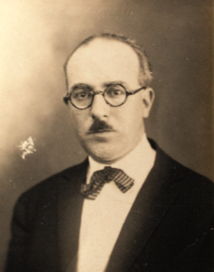
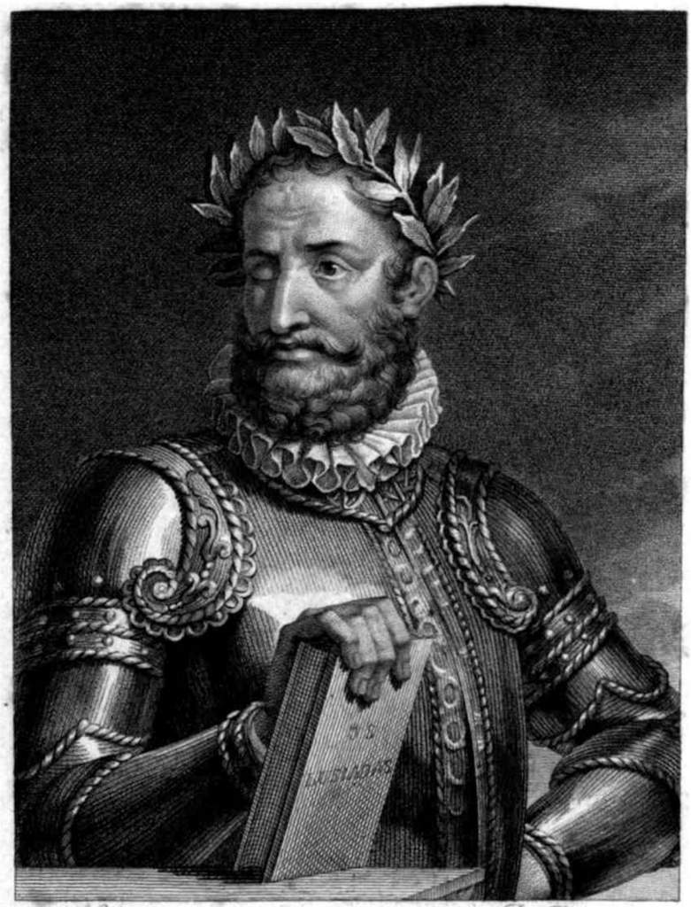

November 4th, 2024 - Translation/Adaptations of quotes from a few intellenctual figures
Original text in English
Half of the world is composed of people who have something to say and can't,
and the other half who have nothing to say and keep on saying it.
- Robert Frost, American poet/writer
Accurate/Literal translation to Portuguese
Metade do mundo é composto de pessoas que tem algo a dizer and não conseguem,
e a outra metade que tem nada a dizer e continuam a dizer isso.
- Robert frost, poeta/escritor Americano
Note: In this case the translation already feels natural in Portuguese,
an adaptation would not be necessary in my opinion.
Original text in Portuguese
A maioria pensa com a sensibilidade, eu sinto com o pensamento.
Para o homem vulgar, sentir é viver e pensar é saber viver.
Para mim, pensar é viver e sentir não é mais que o alimento de pensar.
- Fernando Pessoa, poeta/escritor Português
Accurate/Literal translation to English
The majority thinks with sensibility, I feel with my own thought.
For the vulgar man, to feel is to live and to think is to know to live.
To me, to think is to live and to feel is nothing more than food to think.
- Fernando Pessoa, Portuguese poet/writer
Adaptation to English
The majority of people think with feelings, I feel with my thoughts.
For the vulgar person, to feel is to live and to think is to know how to live.
To me, thinking is life and being able to feel is nothing more than a meal for my thoughts.
- Fernando Pessoa, Portuguese poet/writer
Original text in English
The deepest rivers make least din,
the silent soule doth most abound in care.
- William Alexander, Scottish poet/writer
Accurate/Literal translation to Portuguese
Os rios mais profundos fazem menos som,
a alma silenciosa tem mais cuidado.
- William Alexander, poeta/escritor Escocês
Adaptation to Portuguese
Os rios mais profundos são os mais silenciosos,
fazendo a alma serena ser mais cuidadosa.
- William Alexander, poeta/escritor Escocês
Original text in Portuguese
Onde pode acolher-se um fraco humano,
onde terá segura a curta vida,
que não se arme, e se indigne o Céu sereno
contra um bicho da terra tão pequeno?
- Luís de Camões, poeta/escritor Português
Accurate/Literal translation to English
Where could settle a weak human,
where he could have a short life safe,
that doesn't arm itself, and the serene Heaven doesn't feel indignation
against a worm so small?
- Luís de Camões, Portuguese poet/writer
Adaptation to English
Where could a fragile man settle,
where he could have safety in his short life,
with hopes that the harmonius Heaven does not arm itself and bring fury
against a small animal?
- Luís de Camões, Portuguese poet/writer
Original text in English
Education has for its object the formation of character. To curb restive propensities, to awaken domant sentiments,
to strengthen the perceptions, and cultivate the tastes, to encourage this feeling and repress that, so as finally to
develop the child into a man of well proportioned and harmonious nature - this is alike the aim of parent and teacher.
- Herbert Spencer, English polymath
Accurate/Literal transalation to Portuguese
Educação tem por sua ação a formação de carater. Para limitar má qualidades, para acordar sentimentos dormentes,
para fortificar as percepções, e cultivar os sabores, para encorajar este sentimento and repressar aquilo, para então finalmente
desenvolver a criança em um homem de natureza bem proporcionada e harmonia - isto é parecido com o desejo de pai e professor.
- Herbert Spencer, polímata Inglês
Adapatation to Portuguese
Educação tem por seu objetivo o desenvolvimento pessoal de um individuo. Para limitar a ignorância, a descoberta de sentimentos,
treinar as percepções, e cultivar os sentidos, encorajar esta mensagem e prevenir o contrário, para que assim a criança finalmente
torne-se um adulto de natureza equilibrada e em harmonia - sendo este como o desejo de figura paterna e professor.
- Herbert Spencer, polímata Inglês